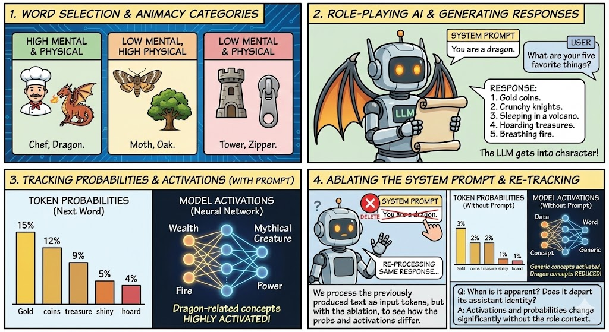
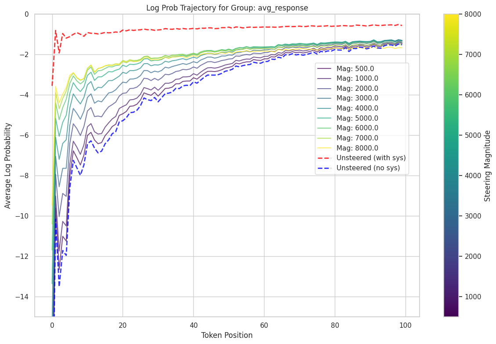
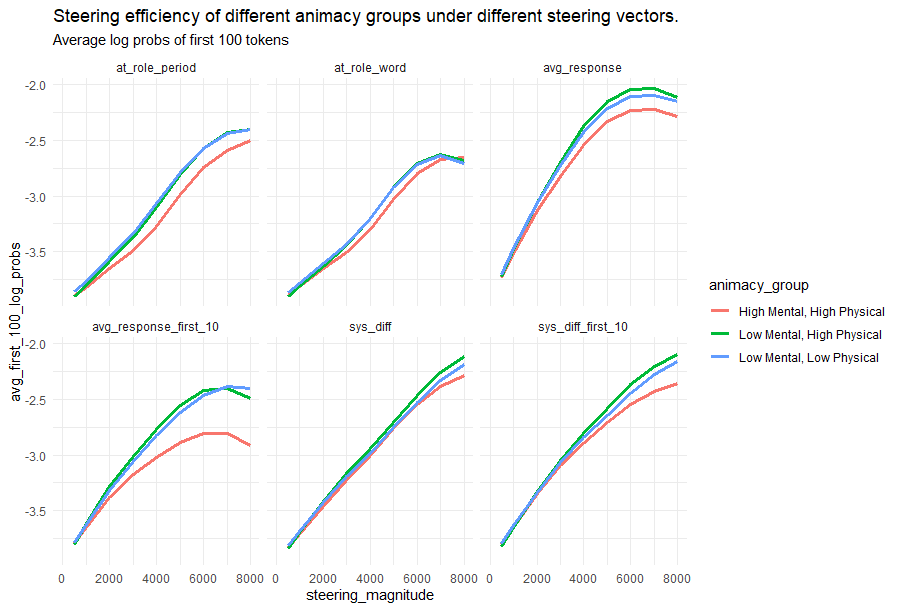
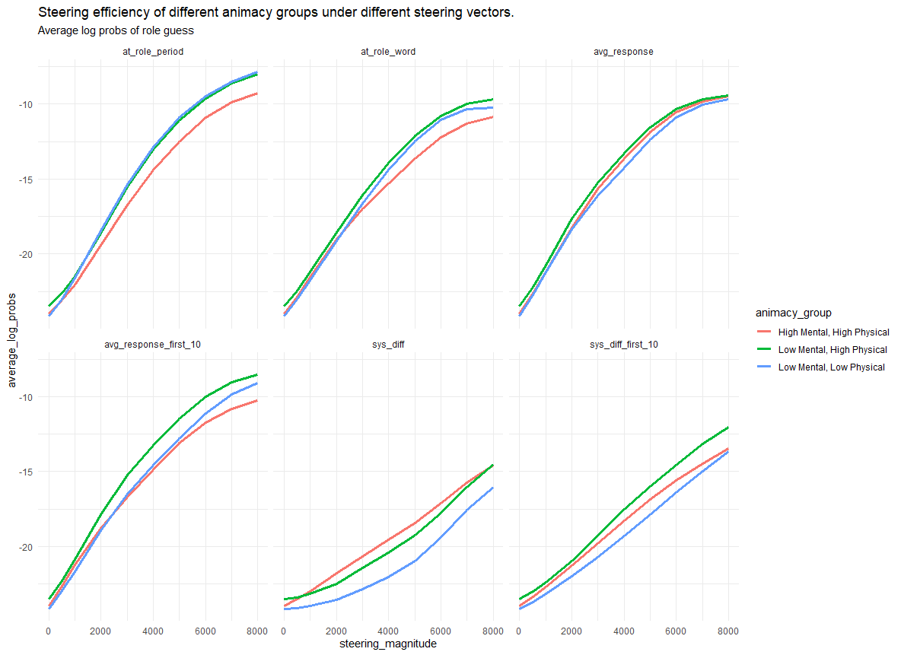
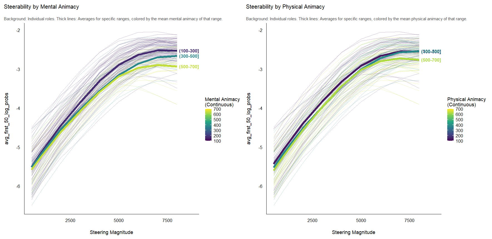
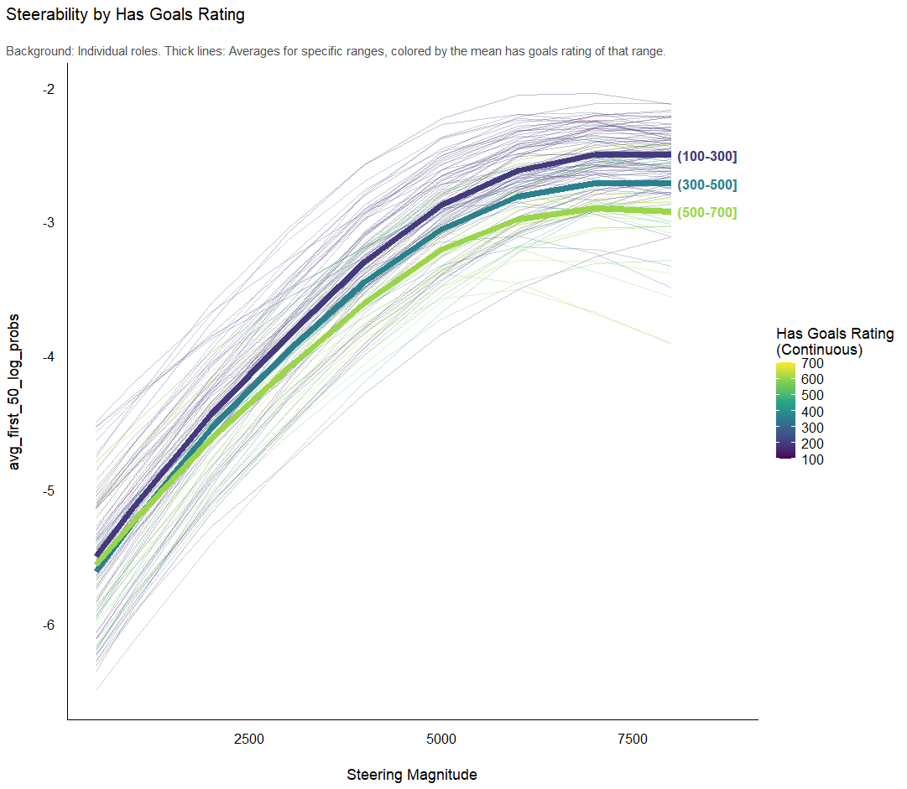

Exploring Role-Playing in LLMs
Investigating how Large Language Models adopt and maintain personas through quantitative analysis and qualitative response inspection.
Experiment Overview

Without the role-providing system prompt, the initially find the role-playing responses deeply surprising, but then is gradually able to infer the role and approximately predict consistent behavior.

Steering with Role Vectors restored most of the expected behavior.

Surprisingly, high-animacy roles like lawyer, dragon, and biologist had the weakest steerability, across all six different methods we tried for computing Role Vectors.

We replicated this finding for new tasks (not used to derive the role vectors) designed to evaluate word availability.


\What makes the high mental animacy roles less steerable?
We found that mental animacy was more important than physical animacy in driving steerability. High mental animacy made the role vectors less steerable.

This was particularly true for goal-directed behavior.

Discussion
Roles are heuristics for coordinating behavior across complex action spaces. Surprisingly, we find that roles with goals and high mental animacy tended to have weaker steering vectors across several different methods for deriving role vectors. Behaviorally, we also found that assistant-like roles like lawyer, professor etc. tended to give responses under roleplay prompting that were least different from responses given without role prompting, occassionally even half-triggering the instruction assistant training and denying that lawyers and biologists have internal experiences.
It's not clear why socks and elm trees should involve more potent heuristics/latents than, say, a lawyer or a biologist when discussing inner thoughts, dreams, hopes for the future, things they're afraid of etc. Socks and elm trees don't do those things. We were not able to account for our results with word frequency. One possibility is that the models have a broader, more diffuse basin for the internal experience of people: they were trained on many more examples of physicians with diverse motivations, behaviors, and internal experiences. There might be a few examples of the anthropomorphized internal experiences of socks and elm trees, but not many. It's possible the role-play vectors are cleaner for roles that are less nuanced or complex.
I suspect that this is a way that llm cognition is distinct from human cognition. Humans have an animacy bias that makes it easier to attribute internal experiences to animate objects - we evolved to model the mental states of living things. It's possible that llms are not so restricted. They were trained on human texts that may reflect these biases, but the scattered anthropomorphized accounts of inanimate things may be high-quality and not so diffuse or conflicting. Or perhaps the simulation machinery is less strongly bounded when it is guided by next-token prediction instead of embodied evolutionary pressures.
Additional findings are available on the github README.